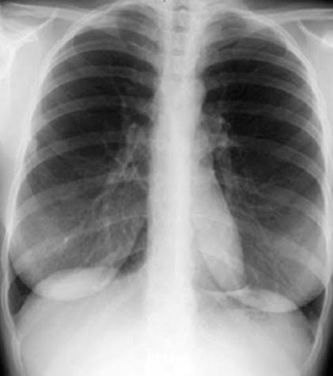

Accurate Dose Calculation
Calculate Entrance Surface Dose (ESD) using validated mathematical formulas and input parameters.
Estimate Entrance Surface Dose (ESD) using exposure parameters quickly and accurately. Support for better patient safety and radiation protection.

Calculate Entrance Surface Dose (ESD) using validated mathematical formulas and input parameters.
Compare your dose with Diagnostic Reference Levels for safety assurance.
View and manage previous calculations for easy reference and tracking.
Generate and download professional reports instantly.
Input patient and exposure parameters.
Click Calculate to process the information.
See estimated ESD and DRL comparison instantly.
Download or print the report for your records.
Get instant results without manual calculations.
Helps monitor radiation dose and supports ALARA principles.
Ideal for radiography students and training purposes.
Supports compliance with radiation protection standards.
Generate and save reports for documentation and records.
Start your calculation now and ensure better radiation safety.